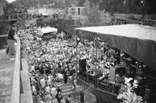
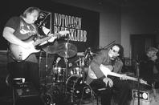
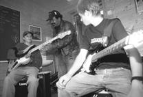
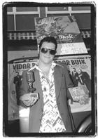

Норвегия - страна Викингов, троллей, фьордов, полночного солнца и … блюза! Да, это так. Блюзовая сцена в Норвегии является одной из самых лучших в Европе.

Эта узкая, вытянутая страна с нетронутой природой и с населением, насчитывающим всего 4,5 миллиона, за последнее десятилетие завоевала хорошую репутацию среди блюзовых музыкантов по обе стороны Атлантики. Сегодня почти в каждом глубоком фьорде, на протяжении всего побережья и в глубине страны вы найдете блюзовое общество, блюзовый фестиваль или услышите блюз в исполнении местной группы.
12 лет одно крупное блюзовое событие поддерживает жизнь блюза в Норвегии. Это событие - Ноттоденский блюзовый фестиваль. Каждый год в начале августа любители блюза со всей Европы съезжаются в Ноттоден, чтобы насладиться 4 днями блюза нон-стоп. На сегодняшний день Ноттоденский блюзовый фестиваль считается европейским фестивалем самой высокой пробы. В течение многих лет он является главным вдохновителем норвежской блюзовой сцены, которая сегодня состоит из нескольких блюзовых фестивалей и множества блюзовых клубов.

Ноттоден находится примерно в двух часах езды к западу от Норвежской столицы Осло, в графстве Телемарк. Маленький городок у озера Хеддал в прошлом был промышленным городом с большим сталелитейным заводом. Там же 90 лет назад была основана международная компания Norsk Hydro. 15 лет назад сталелитейный завод закрылся и 1500 человек остались без работы. После нескольких лет депрессии родилась идея о создании блюзового фестиваля. За 12 лет фестиваль вырос из маленького фестиваля с 3 сценами и 2000 проданных билетов в грандиозное блюзовое событие.
Фестиваль превращает маленький городок с 12-тысячным населением в огромное блюзовое событие, когда десятки тысяч любителей блюза совершают паломничество в место, которое можно назвать колыбелью Норвежского блюза. В прошлом году на фестивале было продано 25000 билетов, город посетило 30000 человек, а на 15 сценах выступали 35 групп из Европы и США. В течение 4 сумасшедших дней состоялось более 70 выступлений!
Более 600 добровольцев обслуживают фестиваль, а в его рамках проводится множество различных мероприятий. За 2 недели до фестиваля молодые таланты со всей страны собираются на блюзовый семинар, где лучшие музыканты страны обучают молодое поколение, как играть блюз. Каждый год один из основных участников фестиваля участвует в семинаре, вдохновляя молодежь эксклюзивным выступлением. В прошлом году в школьную дверь постучалась The Blues Brothers Band.

Частью семинара также является сеанс записи специального компакт диска, завершается же семинар концертом перед многотысячной аудиторией на Ноттоденской городской площади.
Все поколения принимают участие в блюзовом фестивале. Даже в детском саду есть свой собственный блюзовый проект, когда местные музыканты учат детей блюзу и, конечно же, дают для них концерт. Думаю, что Roomful of Blues все еще помнят концерт для 600 детей на открытой площадке Ноттоденского детского сада в 1995. Местное общество пенсионеров предлагает свою помощь, обеспечивая добровольных помощников фестиваля и аудиторию отличной домашней едой. В награду за это в центре для пенсионеров бывает специальный концерт. Два года назад пенсионеры наслаждались замечательной музыкой госпел в исполнении The Persuasions, а в прошлом году пожилых людей навестили The Myles Family из Кларксдейла, штат Миссиссипи. В Ноттоденском колледже студенты имеют возможность избрать блюз в качестве изучаемого предмета и посещать теоретические и практические занятия. Первый семестр оказался чрезвычайно успешным.
Кларксдейл стал побратимом Ноттодена еще в 1995, и с тех пор такие группы как Super Chikan Johnson, Big Jack Johnson, Pinetop Perkins и The Myles Family навещают город-побратим.
Список имен на афишах фестиваля впечатляет. Такие блюзовые гиганты как B.B. King, Robert Cray, Johnny “Guitar” Watson, Junior Wells, Luther Allison, Johnnie Johnson, Billy Boy Arnold, John Hammond, Koko Taylor, Lowell Fulson, Peter Green, Bo Diddley, Jimmy Witherspoon, Otis Rush, James Cotton, Joe Louis Walker, Magic Slim, Johnny Adams, Charlie Musselwhite и Ike Turner уже побывали в Ноттодене, и наряду с ними The Blues Bothers Band, The Fabulous Thunderbirds, Omar & The Howlers, Roomful of Blues, Little Charlie & The Nightcats, Rod Piazza & The Mighty Flyers, Lou Ann Barton, Angela Strehli and Marcia Ball (и это всего лишь некоторые из них!!!)
Многочисленные Норвежские блюзовые группы также на протяжении этих лет участвуют в фестивале. Все они - всемирные звезды и местные любители - получают удовольствие от пребывания в Ноттодене, выступая на экзотических площадках с уютной атмосферой.
Ноттоденский фестиваль прошел путь от сумасшедшей идеи, возникшей в 1988, до грандиозного события, которое превратило депрессию в Ноттодене в оптимизм и сделало блюз общенациональным «движением». Город превратился из индустриального в культурный и обрел новое лицо - лицо блюза.
Europas Blues Senter открылся в Ноттодене в августе 1997. Тогда появились Библиотека и Музей Блюза, и это был первый шаг к созданию того, что станет центром для документации блюза. Библиотека и Музей Блюза за короткое время собрали большую коллекцию пластинок, компакт дисков, видеозаписей и книг. Уже сейчас множество людей приходит в библиотеку просмотреть книги на полках, взглянуть на экспонаты, такие как гитара Lucille с автографом Б.Б.Кинга, послушать понравившуюся музыку из коллекции компакт дисков. Цель Библиотеки и Музея Блюза - документировать блюз в книгах, компакт дисках, видеозаписях, редких фотографиях и предметах, и стать важным европейским центром исследований и информации. Центр сотрудничает с Delta Blues Museum в Кларксдейле.
В 1997 был учрежден Норвежский Блюзовый Союз - The Norwegian Blues Union (NBU). Администрация Союза находится в Ноттодене. NBU является организацией, объединяющей более 47 блюзовых обществ с числом членов более 6000. NBU издает блюзовый журнал Blues News, который выходит пять раз в году и продается восьмитысячным тиражом.

Норвежские блюзмены стали довольно популярны в Норвегии и Скандинавии. В этом году Норвежский блюзмен Видар Бюск (Vidar Busk) был назван «Музыкантом Года» на национальной норвежской церемонии вручения музыкальных премий. Впервые блюзовый музыкант завоевал награду в музыкальном шоу, существующем вот уже 30 лет!
Итак, без сомнения, Блюз жив, и даже в Норвегии - там, где вы меньше всего ожидаете его встретить!
Кнут Слеттемо
The Blues Foundation Newsletter
Перевод Арсена Шомахова